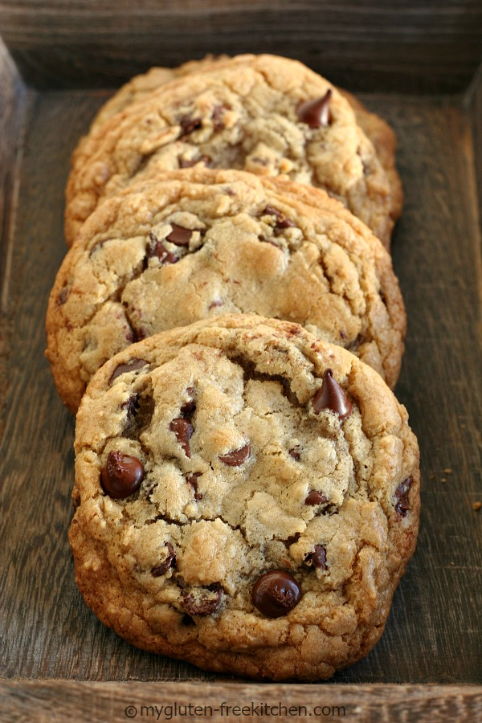

Gluten-free Chocolate Chip Cookie Recipe

Description
Miss eating your grandmother's chocolate chip cookies? Follow along with this recipe to
relive those sweet memories with mouthwatering flavour. From My Gluten Free Kitchen
Ingredients
- All-purpose gluten-free flour
- Xanthum Gum
- Baking Soda
- Salt
- Cream Cheese
- Unsalted Butter
- Packed Brown Sugar
- Sugar
- Vanilla extract
- Eggs
- Semi-sweet chocolate chips
Steps
- In a medium bowl, whisk together gluten-free flour, xanthan (unless flour blend already has xanthan or guar gum), baking soda and salt. Set aside.
- In the bowl of your stand mixer, place the cream cheese, then pour melted butter over it. Add brown sugar and sugar and mix on medium speed for 2 minutes. (I use the paddle attachment on my mixer.)
- Add vanilla extract and egg yolks (one at a time) mixing on low-medium speed until well mixed.
- Add the flour mixture that you set aside earlier, beating on low until just combined.
- Add the chocolate chips and mix on low or by hand, just until mixed thoroughly.
- Cover the mixing bowl with plastic wrap and refrigerate a minimum of 4 hours and up to 4 days.
- When you are ready to bake, remove from refrigerator and allow it to come closer to room temperature so you can scoop the cookies easily before baking.
- Preheat oven to 375°.
- Line cookie sheets with sheets of parchment paper or silicone liners. Do not spray!
- Use a #20 cookie scoop to scoop even mounds of cookie dough spaced several inches apart. I can get 12 per cookie sheet.
- Bake the cookies for 11-12 minutes at 375°. Remove when edges are set and just browning. The centers will look undercooked, but will continue cooking as they cool. To ensure you don't over bake, I suggest you bake a few test cookies so you can determine the right baking time for your oven. If you like gooey centers, cook less, if you like crunchier cookies, cook longer.
- If you'd like, you can sprinkle more chocolate chips on them once you remove from oven.
- Let the cookies sit on the cookie sheet for just 2-3 minutes before removing to a cooling rack to finish cooling.
- Enjoy and share!